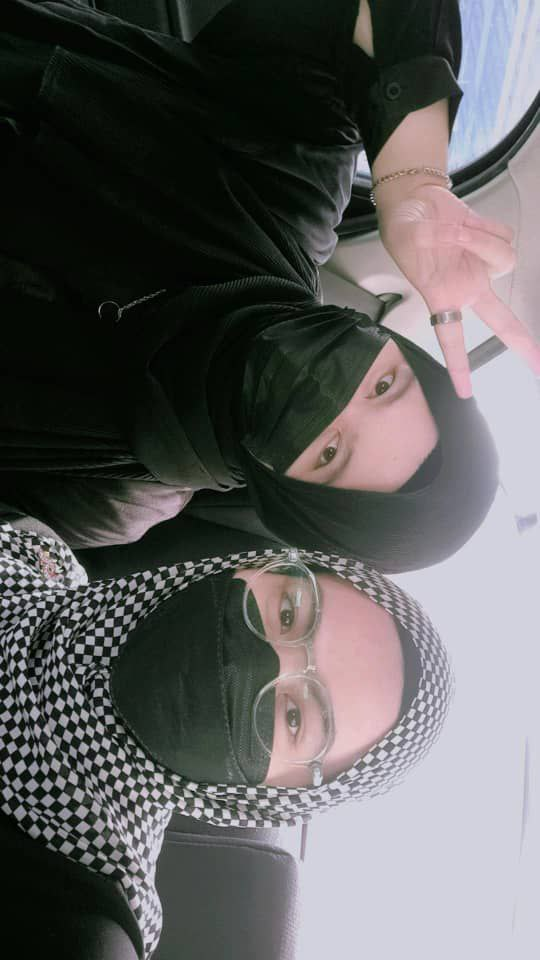
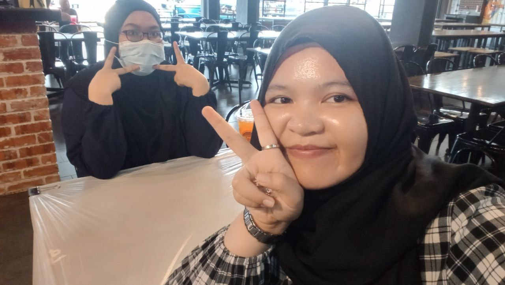
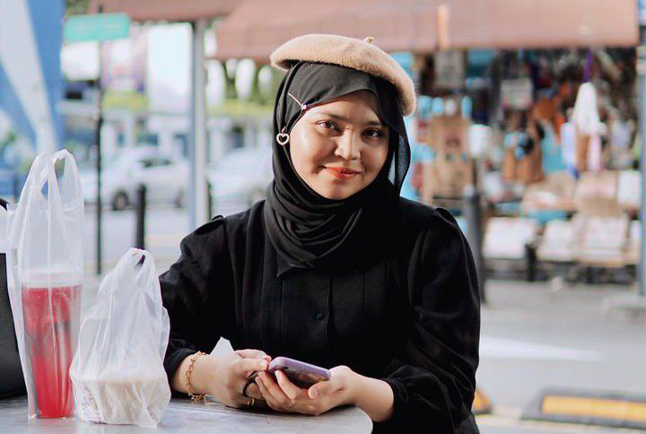

My Friends
Friends are one of the important part of my life. They all means a lot to me. Although, I don't have that many friends to be honest. I do have a lot of acquaintance, or maybe classmates who I know but I'm not close with. Friends in general can be divided into some catagories such as best friends, school friends, childhood friends, university friends or even classmates. I have 3 best friends which I met from high school. All three of them are the closest to me at this moment. Despite all of us rarely meet and were in different classes or changed our high schools, we still keep in contact are close as ever. I would like to thank all three of them for still keeping up with me even though I am such a low maintenance friend.
Aina Fatihah

My first best friend is Aina Fatihah Binti Mohd Shanon. We meet during the first year of highschool. We were classmates from Form 1 until Form 3 so we basically spend those 3 years together. In addition, she's not only my classmates but she also is my deskmate, the one who sits beside me. when I met we were not that close yet because she was close with someone else and so do I. It was until my friend moved high schools and the seating plan in class were changed. We get to sit next to each other and find out we get along with each other well. I'm surprised to find that we are literally the polar opposite yet managed to be close friends. Most of our interests are not the same. She likes kpop while I like english pop, she's shy while I'm not, she likes pink and I like blue, she likes kdrama while I likes anime. Most of the things that she told me about her interest stay in my mind although I did not like it as much as her and same goes for her, most of the things I told her about my interest, she does not really know anything about it but both of us always remember what the others like. During those 3 years we were super close because everywhere we go, we go together. After that, she moved to another high school which leaves me with no friends in the current high school basically but we still contact each other frequently. We video call and texts each other a lot even until now. We also usually plans to meet each other everytime we are on our semester break cause she's currently studying at UiTM Arau which means our breaks are in the same time. She means a lot to me and I really appreciate her for always being there for me. Currently, I would say that I am the closest to her. Although she has new friends from university, she never forgets about me and I know I can always count on her as she can counts on me.
Raina Syafika

Next up we have Raina. Her full name is Raina Syafika Binti Razmi. I met here also when I'm in my first year of high school. We were in different classes and we first time met during our co-curicular time. We were in the same club and we were the only two person who has no friends. Other people in the club already their own friends and it's only me and Raina who were the outcast. We were not close at first but we meet at the club every wednesday so we started to talk to each other. Then, I found out that one of my classmates are her friend. I am close to my classmate at that time so we all just hang out with each other and eventually we became friends. I started to grow closer to her when I'm in my form 4 where all of my friends already moved to another school. Although we still are in different classes we still meet during clubs and usually attend programs or activities together. We also started to go out to mall and everything after that. Without us knowing we were already so close to the point where we could tell everything to each other. Compared to aina I spent more time with Raina more because she lives near my house. We usually go to karaoke together and we like the same music too so it was so much fun everytime we went to karaoke. Now, she studies at UNIMAS in Sarawak so it's quite hard for us to meet. However, we video call a lot and always update each other about our lives.
Amrina Rosyada

Amrina is actually the first friend that I made when I first entered high school. She sits besides me during our entrance exam and become my classmates. On the first day of school, we basically just glued to each other and I met her mother while she met mine on that day. We sit next to each other in class and since both of us does not really know other people there we just talk to each other for most of the time. We get to knnow each other and she was very sweet. Most of our interest is not the same but we can still share with each other. Other than that, we became so close to the point where we have our own inside jokes. It's all just laughter when we were together. We got so much closer as time passed by. That was until she had to moved school later that year. We only got to spend half of the year together yet we already became so close with each other. Once she moved out we keep contacting each other a lot telling how was school like and everything, we also usually go to the cinema during the weekend to catch up with each other. Despite the fact that we no longer meet daily, we have this tradition where we will always try to be the other's firts wisher on their birthday and both of us always get gifts for each other. She once gave me this massive balloon and chocolates while I gave her flowers and cake. It was so wholesome when I think about it. We talk to each other often until she entered university and make new friends and partner. Of course both of us are busy so it's understandable. I still consider her as one of my close friends.